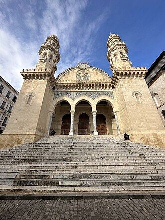

Overview
La mosquée Ketchaoua ou mosquée Ketchawa est une mosquée historique faisant partie du patrimoine classé de la basse casbah d'Alger.
جامع كتشاوة من أشهر المساجد التاريخية بالعاصمة الجزائرية. بناه حسن باشا في العهد العثماني عام 1612م وجرى توسيعه عام 1794م، مما جعله أحد أكبر المساجد في الجزائر، ثم حوله الدوق دو روفيغو إلى كنيسة في عهد الاحتلال الفرنسي، تحت إمرة قائد الحملة الفرنسية على الجزائر «دو بولينياك» ـ بإخراج جميع المصاحف الموجودة فيه إلى ساحة الماعز المجاورة التي صارت تحمل فيما بعد اسم ساحة الشهداء، وأحرقها عن آخرها، فكان منظرا أشبه بمنظر إحراق هولاكو للكتب في بغداد عندما اجتاحها. وقد قام الجنرال روفيغو بعد ذلك بتحويل الجامع إلى إسطبل، بعد أن قتل فيه من المصلين مايفوق أربعة آلاف مسلم كانوا قد اعتصموا فيه احتجاجا على قراره تحويله إلى كنيسة، وكان يقول:«يلزمني أجمل مسجد في المدينة لنجعل منه معبد إله المسيحيين» [ ثـم هدم المسجد بتاريخ 18/12/1832 م.
The Ketchaoua Mosque, also known as Djamaa Ketchaoua, is a mosque in the city of Algiers, the capital of Algeria. Completed in the 17th century, during Ottoman period, the mosque is located at the foot of the Casbah of Algiers, a UNESCO World Heritage Site and is on the first of the Casbah's many steep stairways. Its construction was logistically and symbolically a cynosure of pre-colonial Algiers. The mosque is noted for its unique fusion of Moorish and Byzantine architecture.
Keçiova Camii, Cezayir'in başkenti Cezayir'de bulunan bir camidir. Cami, 1612 yılında Osmanlı döneminde inşa edilmiş olup Cezayir Kasbahı'nda yer almaktadır. Cami, Mağrip ve Bizans mimarisinin eşsiz birleşimi ile dikkat çekmektedir.
Masjid Ketchaoua dahulunya merupakan gereja Katolik bernama Katedral Santo Filipus atau dalam bahasa Prancis Cathédrale Saint-Philippe adalah sebuah masjid di kota Aljazair, ibu kota Aljazair. Bangunan ini dibangun selama pemerintahan Ottoman pada abad ke-17 dan terletak di kaki Kasbah Aljazair, yang merupakan Situs Warisan Dunia UNESCO.
کتشاوہ مسجد ایک الجزائر کے دار الحکومت الجزائر میں ایک مسجد ہے۔ یہ مسجد سترہویں صدی میں عثمانی دور میں تعمیر کیا گئی تھی اور قصبہ کے دامن میں واقع ہے جو یونیسکو کے عالمی ثقافتی ورثہ میں شامل ہے۔ یہ مسجد جو قصبہ کی بہت سی کھڑی سیڑھیوں کے پہلے حصے پر کھڑی ہے ، منطقی اور علامتی طور پر قبل از نوآبادیاتی شہر الجزائر کا منظر پیش کرتی ہے۔ اس مسجد کو موری اور بازنطینی فن تعمیر کے منفرد انضمام کے ساتھ تعمیر کیا گیا ہے۔
Die Ketschawa-Moschee ist die ehemalige katholische St.-Philipps-Kathedrale im Kasbah-Viertel der algerischen Hauptstadt Algier und mit diesem UNESCO-Weltkulturerbe. Sie befindet sich nahe der Nationalbibliothek und der Großen Moschee. Sie gilt als eine einzigartige Verbindung maurischer und byzantinischer Architekturelemente und als Symbol für die Geschichte der Stadt Algier sowie ganz Algeriens. Die heutige Fassade wurde bis 1890 vom französischen Architekten Albert Ballu gestaltet.
La mezquita de Ketchaoua —en árabe: جامع كتشاوة — es una mezquita histórica perteneciente al patrimonio clasificado de la Casba baja de Argel. Es el símbolo de la historia de la capital argelina. Construida en 1436, habría sido masivamente reconstruida en el siglo XVIII bajo el gobierno del dey Hassan. Fue remodelada en el siglo XIX, después de su requisición en 1832 para asignarla al culto católico durante el período colonial bajo el nombre de la catedral de San Felipe de Argel, que conservó hasta la independencia de Argelia en 1962, cuando de nuevo se convirtió en una mezquita. Está clasificada, con la totalidad de la Casba, en el patrimonio mundial de la UNESCO. La fachada actual es obra del arquitecto francés Albert Ballu.
La moschea Ketchaoua o Ketchawa è un edificio di culto di Algeri.
A Mesquita de Ketchaoua é uma mesquita em Argel, a capital da Argélia. Está localizada ao pé da Casbah, que foi construído durante o domínio otomano no século 17, que é Património Mundial da UNESCO. A mesquita, que fica na primeira das escadarias íngremes do Casbah, foi logicamente e simbolicamente o cynosure da cidade pré-colonial de Argel. A mesquita é conhecida pela sua fusão única da arquitetura mourisca e bizantina.
凱喬娃清真寺 是阿爾及利亞首都阿爾及爾的一座清真寺。它建於17世紀奥斯曼帝國統治時期，位於被聯合國教科文組織列為世界遺產的阿爾及爾古堡腳下，為獨特的摩爾和拜占庭式建築。
Мече́ть Кетша́ва — мечеть в городе Алжир. Расположена у подножья крепости, известной смешением стилей мавританской и византийской архитектуры.
มัสยิดกิตชาวะฮ์ เป็นมัสยิดในนครแอลเจียร์ เมืองหลวงของประเทศแอลจีเรีย สร้างเสร็จในคริสต์ศตวรรษที่ 17 ในสมัยออตโตมัน มัสยิดนี้ตั้งอยู่ที่ตีนของก็อศบะฮ์แห่งแอลเจียร์ แหล่งมรดกโลกของยูเนสโก การก่อสร้างอาคารนี้ถือเป็นจุดสนใจสำคัญทั้งในด้านโลจิสติกส์และเชิงสัญลักษณ์ของเมืองแอลเจียร์ก่อนยุคอาณานิคม มัสยิดแห่งนี้มีชื่อเสียงในด้านการผสมผสานสถาปัตยกรรมมัวร์และไบแซนไทน์ที่เป็นเอกลักษณ์
Moscheea Ketchaoua este o moschee din orașul Alger, Algeria. Aceasta este una dintre cele mai importante atracții turistice ale orașului, făcând parte din Patrimoniul Mondial UNESCO.
On the map
Documents and links
- Wikipédia — Français
- Wikipédia — العربية
- Wikipédia — English
- Wikipédia — Türkçe
- Wikipédia — Bahasa Indonesia
- Wikipédia — اردو
- Wikipédia — Deutsch
- Wikipédia — Español
- Wikipédia — Italiano
- Wikipédia — Português
- Wikipédia — 中文
- Wikipédia — Русский
- Wikipédia — ไทย
- Wikipédia — Română
- Wikidata — Q2471799
Data: Wikidata (CC0), updated every 3 months. The year is the earliest known construction date of the building: for a building that became a mosque later (such as Hagia Sophia), it is that of the original building. Photos: Wikimedia Commons, author and licence on each photo's page.